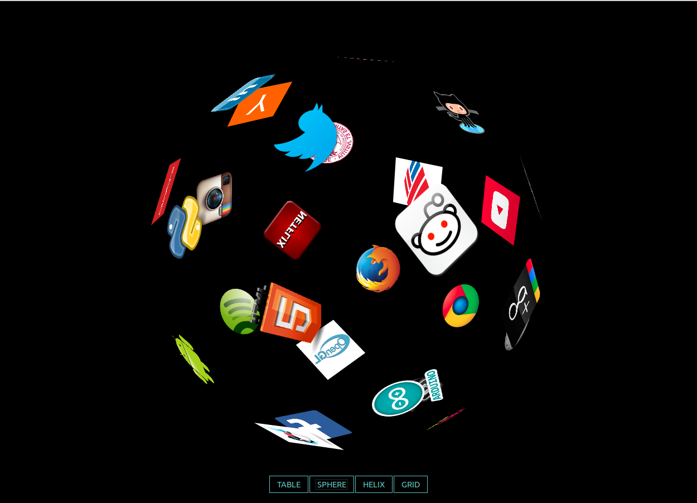
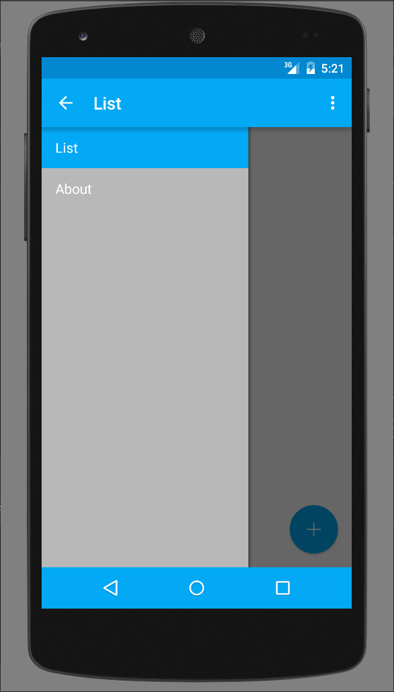
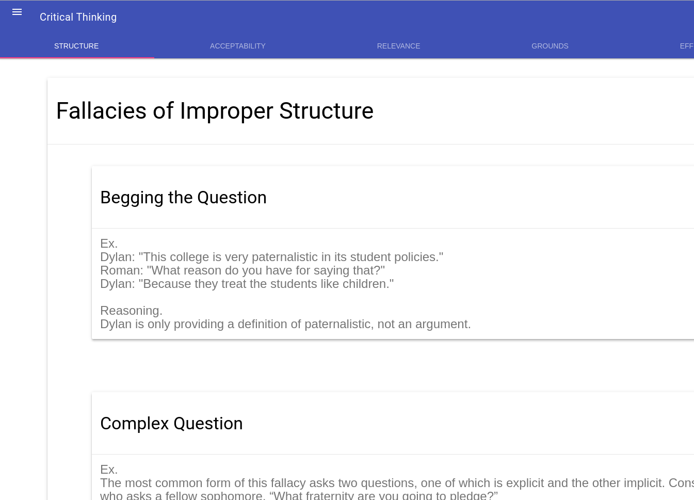
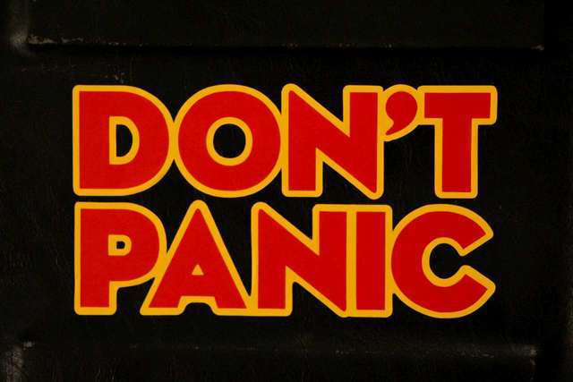

Projects
Project Euler
Project Euler is a website that provides elegant problems, usually best solved with a computer. A close friend of mine suggested that I start my journey into computer science by attempting these problems. I completed 10...
Three.js Dashboard 
My first semester at Albright I took a graphics course on openGL. In my free time, I learned webGL, and created this application which built off a Three.js example.
Android List Application 
During my second semester at Albright I took an android programming course. As a final project I created this list application which used material design a couple months after it's release.
Critical Thinking Web Application 
During my third semester at Albright I took a critical thinking course. In my free time, I created this web application.
Life, the Universe, and Everything 
During my last semester at Albright I took an Independent Study Course on Artificial Intelligence. I ended up teaching and reteaching myself everything I wanted to know before I graduated about programming.